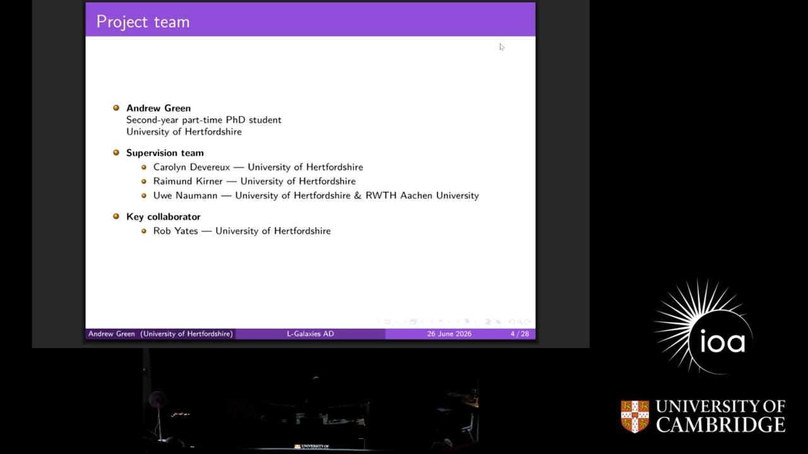
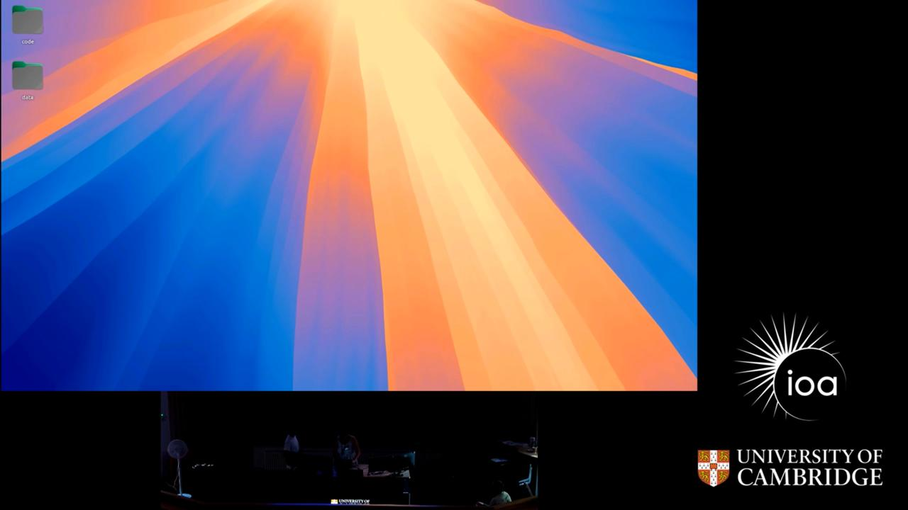
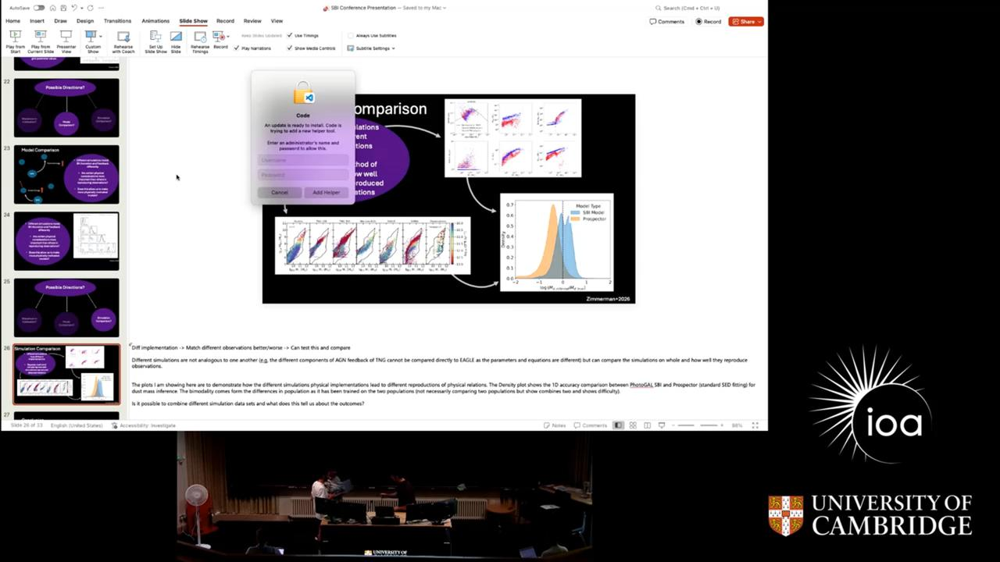
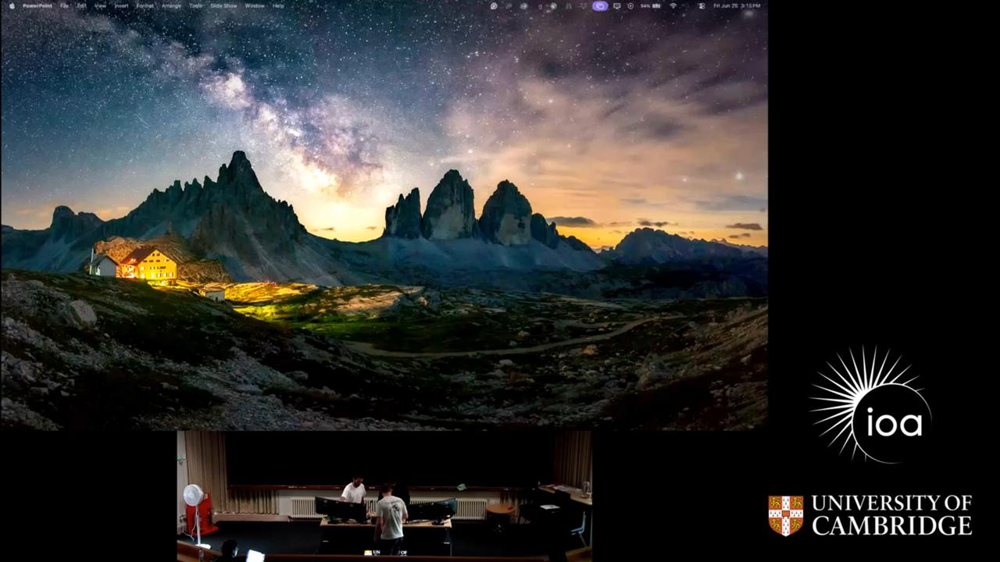
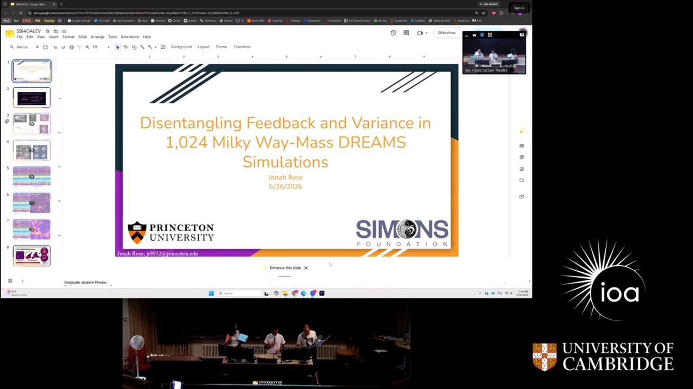
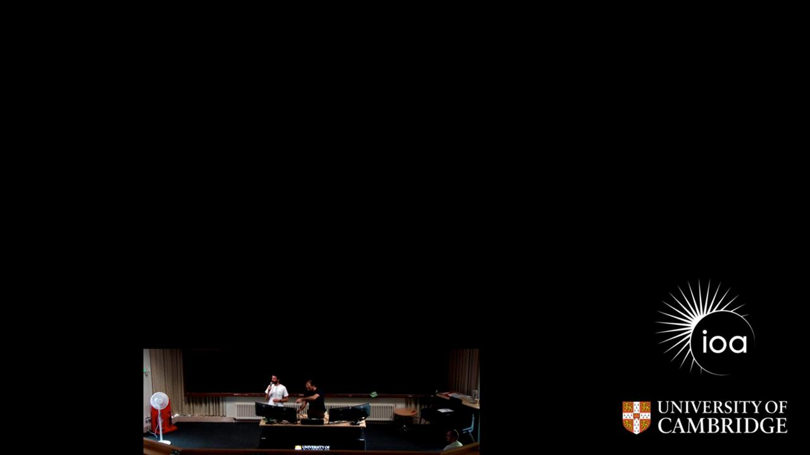
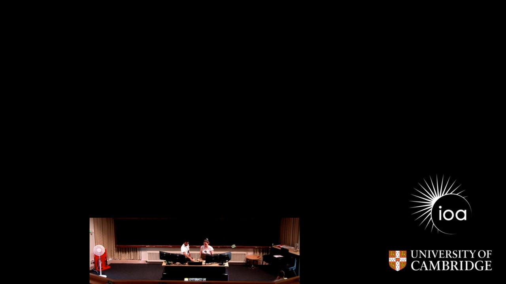

SBI4GALEV — Talks
Day 4
Friday 26 June 202611 talksThe final day of the conference focused on the practical application of Simulation-Based Inference (SBI) and machine learning to bridge the gap between complex simulations and observational data. Presentations spanned a wide range of scales, from the internal properties of stars and the circumgalactic medium to the large-scale environmental drivers of galaxy evolution. A recurring theme was the development of computationally efficient pipelines—such as auto-differentiable simulations and neural posterior estimators—to handle high-dimensional parameter spaces and massive survey datasets. The day concluded with a look at the broader utility of self-hosted and ambient AI for academic education and conference synthesis.











- Connecting Environment and Assembly to Measure the Formation Histories of Dark Matter Halos With GNN-powered SBI — Christian Kragh Jespersen
- Introducing L-Galaxies AD: an auto-differentiable galaxy evolution simulation — Andrew Green
- Exploring the Impact of Dust on Galaxy Luminosity Functions with Semi-Analytic Models — Sophie Newman
- Quantifying Environmental Information in Galaxy Evolution with Interpretable Machine Learning — Shun-ya S. Uchida
- Fast Stellar Age Inference for Galactic Archaeology with SBI — Shichen Su
- Deep learning approaches for galaxy merger identification and classification: bridging simulations and observations — Subhrata Dey
- Inferring CGM Cloud Properties Using Simulation-Based Inference — Tanmay Singh
- Disentangling Feedback and Variance in 1,024 Milky Way-Mass DREAMS Simulations — Jonah Rose
- Image-Based Inference: Bridging Photometric Surveys and Spectroscopic Constraints — James Kostas Ray
- Self-Hosted AI for Education — Sotiria Fotopoulou
- Ambient AI for Scientific Meetings — Chris Lovell
Day 3
Thursday 25 June 20265 talksDay 3 of SBI4GALEV focused on the practical application of simulation-based inference (SBI) to bridge the gap between complex astrophysical simulations and observational data. The sessions spanned a wide range of scales, from the internal physics of the interstellar medium and nebular structures to large-scale cosmological surveys and weak lensing fields. A recurring theme was the optimization of the inference process, specifically through techniques to reduce computational costs, handle model misspecification, and leverage multi-fidelity data. Together, these talks demonstrated how SBI is evolving from a theoretical tool into a robust framework for enhancing the precision of galaxy evolution and cosmological constraints.


- Galaxy Evolution Meets Cosmological Inference — Hiranya Peiris
- Minimum Distance Summaries for Robust Neural Posterior Estimation — Sherman Khoo
- Field-level cosmology with <100 simulations using multifidelity SBI: a proof-of-concept for KiDS-legacy weak lensing — Alex Saoulis
- Connecting Stars and Gas: a data driven approach to modeling gas emission based on stellar continuum using DESI — Eduardo Albuquerque Hartmann
- Mapping Nebular Structure and ISM Conditions with SBI — Caterina Bracci
Day 2
Wednesday 24 June 202610 talksThe second day of SBI4GALEV focused on the practical implementation and scaling of simulation-based inference (SBI) across diverse astronomical applications, from galaxy clustering and SED fitting to gravitational wave analysis for LISA. A significant portion of the day was dedicated to improving the robustness and efficiency of these models, including the use of diffusion models for inpainting and prior adaptation, and the development of generative models to emulate expensive hydrodynamic simulations. The session concluded with a strong emphasis on community standardization, introducing the Synference framework and a proposed data challenge to benchmark SBI against traditional Bayesian methods.


- OASIS: A Robust Framework for Population Inference in Astronomy — Arya Farahi
- GalSBI: Forward Modelling Galaxy Clustering and Population — Silvan Fischbacher
- Continuous Representation of Hydrodynamic Simulations for Robust SBI — Ming-Shau Liu
- Implementing 3D Intrinsic Alignment Models in Projected Simulations — Leonor Simões
- Comparing Bayesian Inference Methods in Astronomy: HMC, Nested Sampling, and SBI — Johannes Buchner
- Test-time inference for Prior Change via Density Ratio Estimation — Yichen Zang
- Diffusion based SED fitting — Grégoire Aufort
- SBI for LISA — Philippa Cole
- Simulation-Based Inference (SBI) Data Challenge for Galaxy Evolution — Luca
- Synference Tutorial — Thomas Harvey
Day 1
Tuesday 23 June 20267 talksThe first day of SBI4GALEV focused on the integration of machine learning and differentiable programming into galaxy evolution modeling. Presentations highlighted a shift toward simulation-based inference (SBI) and neural emulators to bypass the computational bottlenecks of traditional radiative transfer and SED fitting. The sessions collectively demonstrated how generative models, such as diffusion models and normalizing flows, are being used to recover physical parameters and kinematics from complex astronomical data.


- Introduction to SBI for Galaxy Evolution 2026 — Chris Lovell
- Astronomic: A Plugin-Based Platform for Astronomical Data Analysis and Active Learning — Grant Stevens
- Pop-Cosmos: A Generative Model for the Galaxy Population — Stephen Thorp
- SE3D: A Novel Modeling Technique for Chromatic Resolved Galaxy Observations — Stephen Ramnichal
- Diffusion-Based Inference of HI Kinematics in Ultra-Diffuse Galaxies — Lawrence Faria
- Decoding the SED: Disentangling galaxy physics from the rest-frame optical — Patricia Iglesias-Navarro
- Differentiable SED Simulation with Ceridwen — Amanda Stoffers